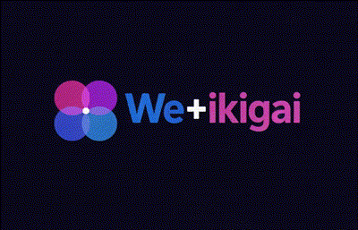

◆ The Wikigai framework
Discover your perfect path
Four questions sit at the centre of a life that fits: what you love, what you're great at, what the world needs, and what sustains you. We help you answer them — and turn the answers into a direction you can act on.
100% free · Email verification · Your results are saved to your account.

The four pillars of Wikigai
Find the overlap. Then build on it.
❤️
Your passions
Passion-driven discovery — what you love
⚡
Your strengths
Strengths mapping — what you're great at
🌍
Your impact
Impact & meaning — what the world needs
💰
Your fortune
Sustainability — what you can be paid for
Find the overlap. Then build on it.
Take the survey and get your personal map in minutes.
Map my path